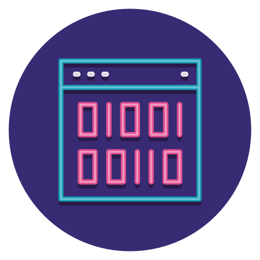
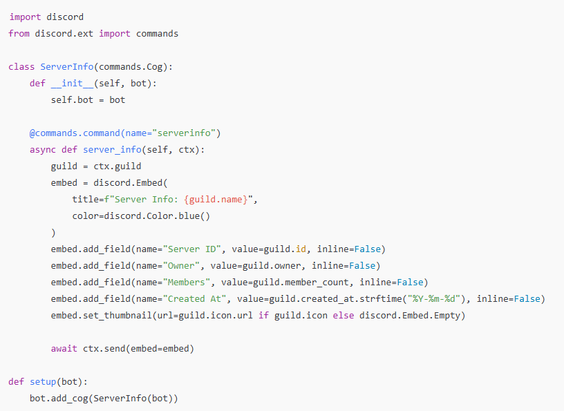
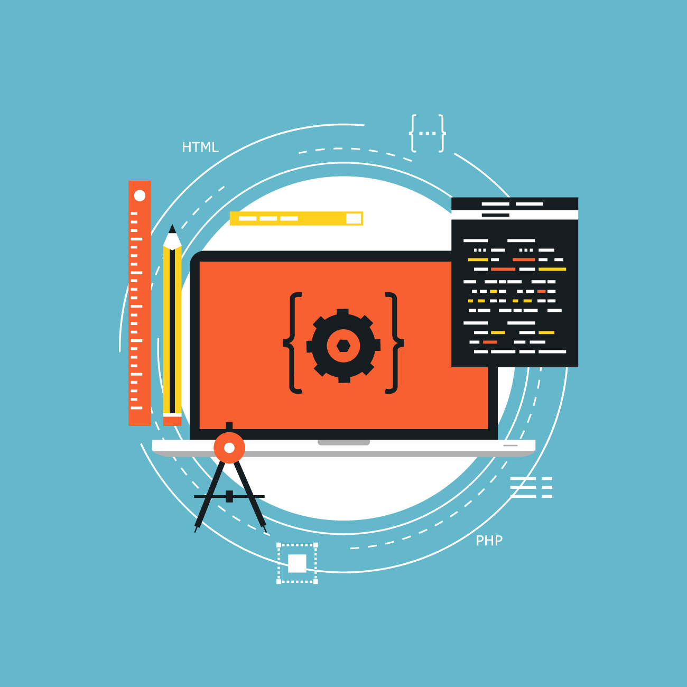
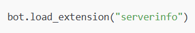

Discord bots often grow quickly, with dozens of features ranging from moderation to music. Without modularization, your code can become messy and hard to debug. By separating commands into dedicated files, you:

Keeping your bot’s commands in separate files ensures that your main script doesn’t become cluttered. This makes it easier to read and maintain over time.
By isolating commands, you can add or remove features without rewriting large portions of your main bot script. This keeps development fast and flexible.
When an error occurs, it’s easier to pinpoint the problem if commands are organized in their own modules. You only need to check the specific file instead of scanning the entire project.
Utility commands can be lifted from one project and reused in another with minimal changes. This saves time and effort in future development.

One of the most useful utility commands is a server info command. It gives admins and members quick insight into their server’s statistics. Here’s an example written in Python using discord.py, structured for modular import:
This modular approach not only makes your bot cleaner to manage but also ensures that each command can be developed, tested, and maintained independently. As your project grows, organizing features into separate files with clear setup functions will save time, reduce errors, and keep your bot scalable for future improvements.
The ServerInfo class inherits from commands.Cog, which provides a clean way to group commands and keep them modular.
The @commands.command decorator defines the serverinfo command, making it easy for users to trigger the function by typing !serverinfo (or your chosen prefix).
When the command is called, the bot generates and sends an embed containing details such as the server name, ID, owner, member count, and creation date.

The setup() function acts as the entry point that allows the main bot script to load this module with bot.add_cog(ServerInfo(bot)).
In your main bot file, you would simply load this module:

A well-crafted utility command like serverinfo adds real value to your Discord bot. By structuring it with a setup() function and modular imports, you ensure your project remains clean, scalable, and easy to expand in the future. Whether you’re building tools for fun communities or professional servers, utility commands are what transform your bot into a reliable assistant.